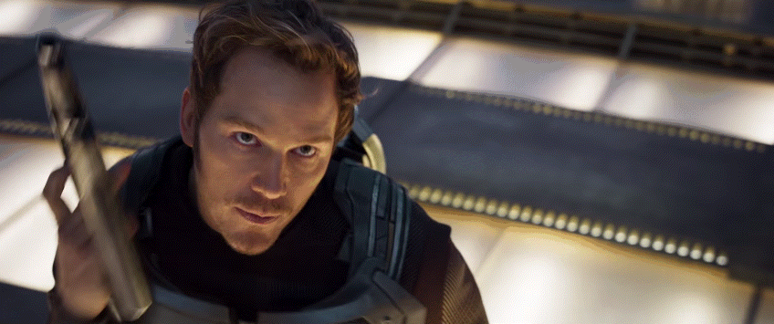
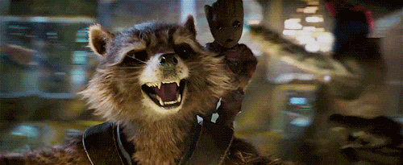
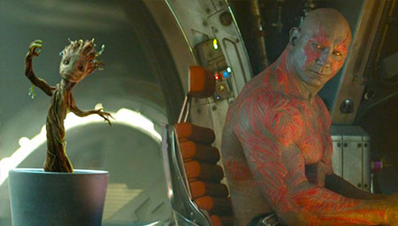

본문콘텐츠영역
ABOUT
- Nebula and Drax the Destroyer
- "All any of you do is yell at each other. You are not friends." "You're right. We're family. We leave no one behind."
- ABOUT
- "All any of you do is yell at each other. You are not friends." "You're right. We're family. We leave no one behind."
- Gamora, Groot and Rocket Raccoon
- "If you free us, I'll lead you to the buyer directly and I'll split the profit between the three of us." "I am Groot." "Four of us."
Guardians of the Galaxy(retroactively referred to as Guardians of the Galaxy Vol 1. is a 2014 American superhero film based on the Marvel Comics superhero team of the same name. Produced by Marvel Studios and distributed by Walt Disney Studios Motion Pictures, it is the 10th film in the Marvel Cinematic Universe (MCU). Directed by James Gunn, who wrote the screenplay with Nicole Perlman, the film features an ensemble cast including Chris Pratt, Zoe Saldana, Dave Bautista, Vin Diesel, and Bradley Cooper as the titular Guardians, along with Lee Pace, Michael Rooker, Karen Gillan, Djimon Hounsou, John C. Reilly, Glenn Close, and Benicio del Toro. In the film, Peter Quill and a group of extraterrestrial criminals go on the run after stealing a powerful artifact.
Perlman began working on the screenplay in 2009. Producer Kevin Feige first publicly mentioned Guardians of the Galaxy as a potential film in 2010 and Marvel Studios announced it was in active development at the July 2012 San Diego Comic-Con. Gunn was hired to write and direct the film that September. In February 2013, Pratt was hired to play Peter Quill / Star-Lord, and the supporting cast members were subsequently confirmed. Principal photography began in July 2013 at Shepperton Studios in England, with filming continuing in London before wrapping up in October 2013. In addition to an original score by Tyler Bates, the film's soundtrack includes several popular songs from the 1960s and 1970s chosen by Gunn. Post-production was completed on July 7, 2014.
- August 1, 2014 (United States)
- Guardians of the Galaxy VOL.1
- In 1988, following his mother's death, a young Peter Quill is abducted from Earth by a group of alien thieves and smugglers called the Ravagers led by Yondu Udonta.
- 
- May 5, 2017 (United States)
- Guardians of the Galaxy VOL.2
- After Rocket steals the batteries for himself, the Sovereign attacks the Guardians' ship with a fleet of drones. the Guardians crash-land on a nearby planet.

- May 23, 2023 (United States)
- Guardians of the Galaxy VOL.3
- The Guardians of the Galaxy 3 release date was revealed in a new video released by Marvel Studios touting the return of movie theaters.we know now the exact date it will hit theaters.
- 
-
CHARACTER
-
“I have lived most of my life surrounded my enemies. I will be grateful to die among my friends.”
TRAILERS
- Music
- In August 2013, Gunn revealed that Tyler Bates would be composing the film's score. Gunn stated that Bates would write some of the score first so that he can film to the music, as opposed to scoring to the film.
- Marketing
- At Disney's D23 Expo in August 2013, Feige presented footage first revealed at the San Diego Comic-Con in July 2013. The first trailer for the film debuted on Jimmy Kimmel Live! on February 18, 2014, with a special introduction by Chris Pratt.
- Production
- Marvel Studios President Kevin Feige first mentioned Guardians of the Galaxy as a potential film at the 2010 San Diego Comic-Con International, stating, "There are some obscure titles, too, like Guardians of the Galaxy.
-

- CHAPTER. 1
- Guardians of the Galaxy Vol. 2 Opening Scene.
- It also has the ability to create a hole seed that shines and flow it around. In Ronan's flagship, such as Darkness, Groot creates a number of small lights in the form of Halls, which lightens the way for Ronan's team.
-

- CHAPTER. 2
- Guardians of the Galaxy Vol. 2 Baby Groot Mission.
- Because of its cute behavior and appearance, it seems to be the most popular among the Guardians of Galaxy members.
-

- CHAPTER. 3
- Guardians of the Galaxy Vol. 1 Baby Groot Dance.
- In the first episode of the Guardians of the Galaxy cookie clip, a little Groot growing in a pot stops when Drax stares while dancing along to Jackson 5's "I Want You Back."
GALLERY
- Sequel
- Further information: Marvel Cinematic Universe: Phase Four § Guardians of the Galaxy Vol. 3 (2023) In November 2014, when Gunn said he had the "basic story" for Vol. 2 while working on the first film, he also said he had ideas for a potential third film.
- Filming
- Pre-shooting began on February 11, 2016, at Pinewood Atlanta Studios in Fayette County, Georgia, under the working title Level Up,[95] with Henry Braham serving as cinematographer and Scott Chambliss as production designer.
- Notes
- Gunn said this sequence with an adolescent Groot is set "years after" the ending of the film, with the character appearing in the same state in Avengers: Infinity War. Identified offscreen as Adam Warlock, who director James Gunn initially planned to feature prominently in the film